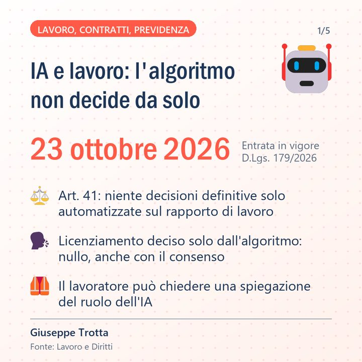

AIWeb app
PostWise
Raccoglie le notizie dai siti di settore, le valuta con l'intelligenza artificiale e prepara bozze di post LinkedIn con card grafiche. Pubblica solo dopo l'approvazione e segnala le cifre che non trova nella fonte.
Python · Claude · API LinkedIn